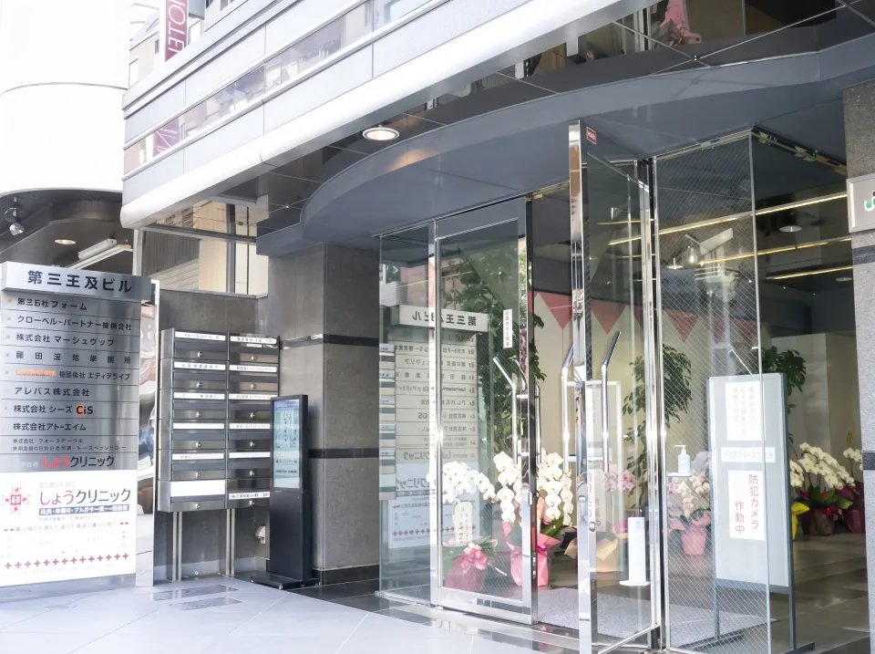
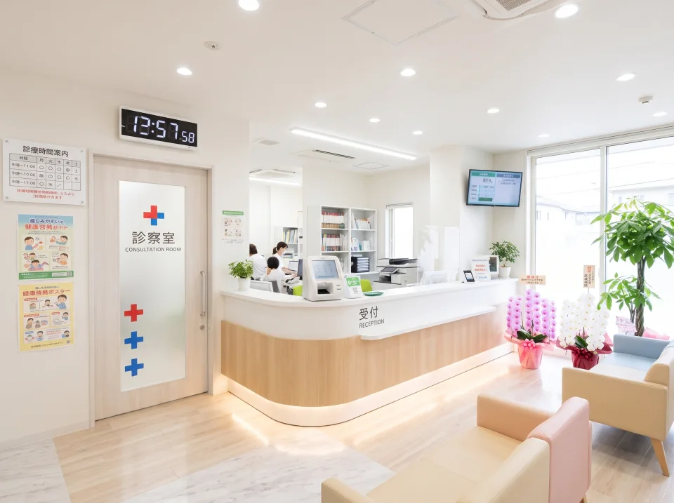
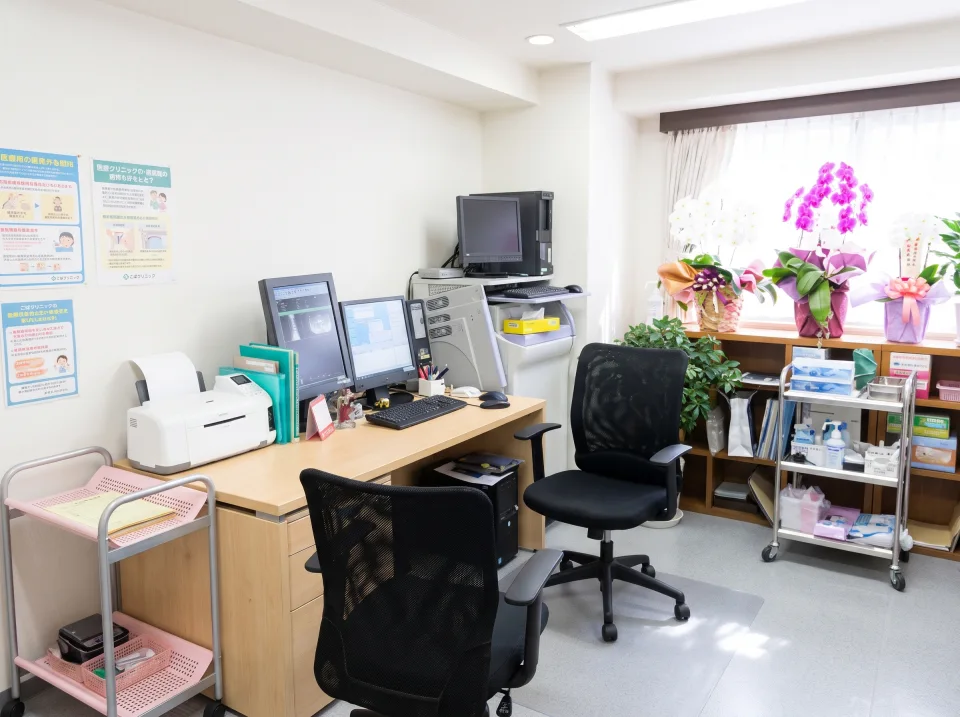

クリニック紹介
院長ごあいさつ
こんにちは。新宿御苑しょうクリニック院長の彰 一祐です。体のことや日々の健康管理について気軽に相談できる場所をつくりたいという思いから、2005年11月、新宿御苑前に開院しました。
当院では、風邪や頭痛、花粉症、湿疹など、暮らしの中で身近な症状を診ています。また、大学病院の腎・高血圧内科での経験を生かし、糖尿病や高血圧、腎臓病の診療にも取り組んでいます。
診察では、一人ひとりの生活を大切にしながら、病気や治療について分かりやすくお伝えすることを心がけています。健診で気になったことや、毎日の体調についても、どうぞご相談ください。
院長略歴
- 1991年
- 東海大学医学部医学科を卒業。順天堂大学付属順天堂医院の内科で臨床研修。
- 1994年
- 順天堂大学付属順天堂医院 腎・高血圧内科に入局。
- 1999年
- 順天堂大学医学部大学院を卒業。医学博士号を取得。
- 2004年
- 順天堂大学付属静岡病院 腎臓内科講師。
- 2005年
- 新宿御苑しょうクリニックを開設。
施設紹介
外観・院内の画像はイメージです。



診療時間・アクセス
診療時間
一般診療は受付順です。
| 時間 | 月 | 火 | 水 | 木 | 金 | 土 | 日・祝 |
|---|---|---|---|---|---|---|---|
| 9:00–12:00 | ○ | — | ○ | ○ | ○ | ○ | — |
| 14:30–16:30 | ○ | — | ○ | △ | ○ | — | — |
○ 診療あり — 診療なし △ 下記参照
休診日 火曜・日曜・祝日
第2・第4木曜の14:30〜16:30は、公式サイトのお知らせで予約優先と案内されています。予約方法はお電話でご確認ください。
電話でのお問い合わせ03-3358-1195 休診・受付変更のお知らせアクセス
〒160-0022 東京都新宿区新宿2-15-26 第三玉屋ビル1F- 東京メトロ丸ノ内線 新宿御苑前駅 新宿門出口から徒歩3分
- 都営新宿線 新宿三丁目駅 C8出口から徒歩3分